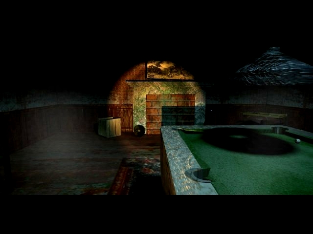
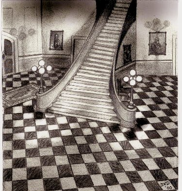
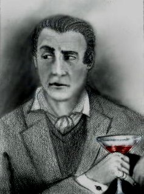
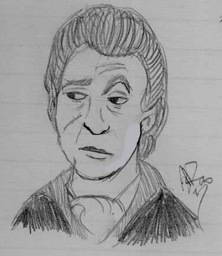
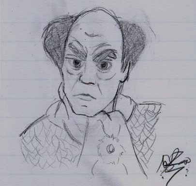
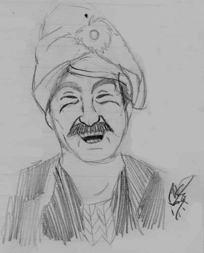
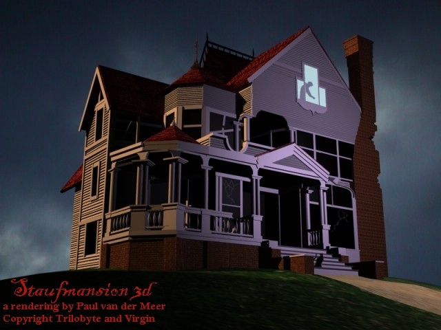
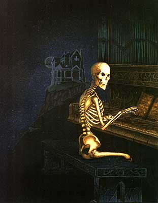

"Not the same as on tv, eh Carl."
Fans see, fans do. This room features some fan-made files. Do you feel inspired
by this? Just mail me and I will put your
creation here as well.
Nine lives, a fan fiction novel by Paul van der Meer
A sketch of Stauf, by Johana

Another sketch by Johana

Brian Dutton, by Johana

Brian Dutton, by Ang D.

The madman himself, by Ang D.

Hamilton Temple, by Ang D.
Julia Heine, by Ang D.
Martine Burden, by And D.

A 3d-rendering of the house, by Paul van der Meer.
